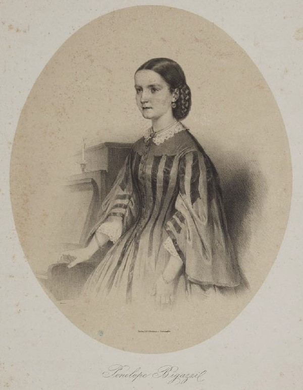
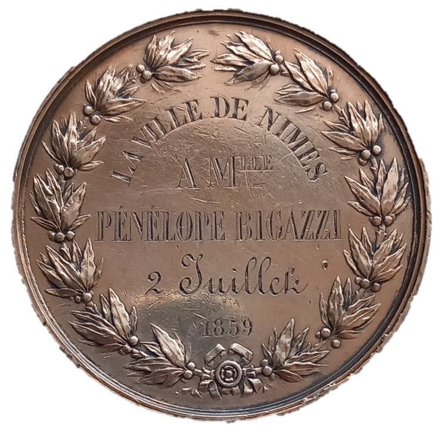
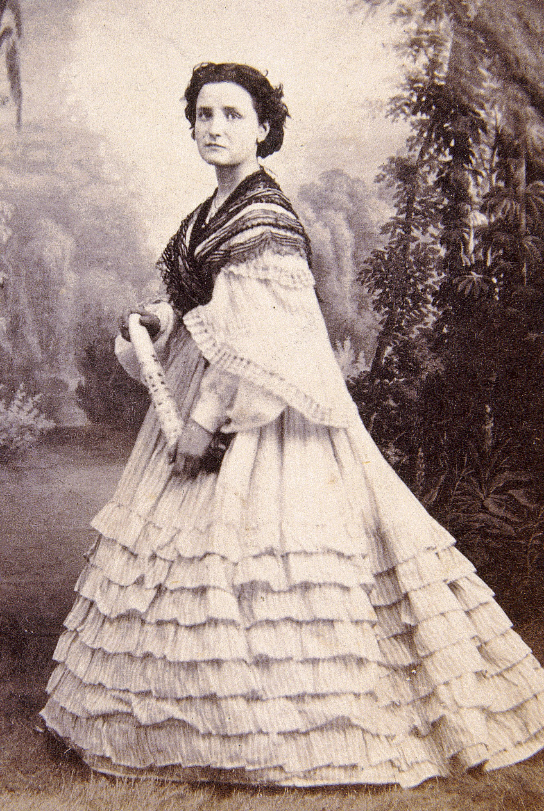
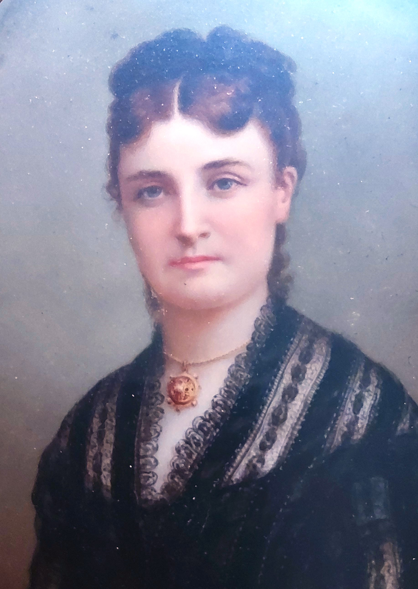

Ceux qui ont rencontré la famille Geloso se sont émerveillés du don artistique commun à tous ses membres. La mère a été elle-même une enfant prodige. Née à Sienne en Italie en 1844 de parents chanteurs lyriques, Pénélope Bigazzi récolte ses premiers prix à l’âge de seulement huit ans, à l’Académie des Beaux-Arts de Florence. Assez vite, son père mélomane entreprend de montrer l’éblouissant talent de pianiste de sa fille, à travers le pays et au-delà. L’Italie est alors portée par le succès de ses opéras romantiques, dont le piano peut en véhiculer les thèmes les plus célèbres. A l’âge de treize ans, Pénélope est assez habile et passionnée pour relever magnifiquement le défi de variations sur Donizetti, Rossini ou encore Verdi, toutes d’une difficulté ahurissante. Sa seule main gauche est capable d’émouvoir, dans la transcription du Casta Diva de Norma de Bellini conçue par Fumagali pour une seule main, à l’époque où l’on repousse sans cesse les limites de la virtuosité. Pendant plus d’un an, ils sillonnent l’Italie en donnant des concerts dans les grandes villes telles Bologne, Venise, Milan, Vérone, Trévise, Bergame, Turin ou encore Brescia. Chaque fois, le public s’enthousiasme pour cette jeune artiste accomplie, qui a non seulement des doigts, mais surtout un talent expressif évident. A Vicenza, on lui offre même un piano. A partir de Turin, sa réputation la précède : « Une petite célébrité est venue parmi nous . » Artiste inspirée, ses solides connaissances musicales lui permettent aussi, au cours de sa tournée, de jouer deux pièces de sa propre composition, devançant la voie que son fils cadet empruntera plus tard.
Tout au long de son périple, Pénélope réunit dans un album les hommages qui lui sont rendus par écrit : dessins, mélodies, dédicaces, par exemples celles d’Adélaïde Ristori ou Camillo Sivori, ou encore poèmes (comme celui-ci, d’auteur indéchiffrable, traduit par David Bianciardi : « O grâcieuse jeune-fille / O fleur élue de l'euphonie / Tout, tout en toi me ravit / Et pénètre mon coeur / Tu me révèles le sens caché / D'harmonies ineffables / En touchant le piano forte / Avec une maîtrise insolite /Tu es chère, tu es bonne / Toi, de mille qualités ornée / Ta renommée partout résonne / Vite, vite auprès de moi reviens ! », à Vérone le 22 octobre 1858). La tournée les conduit ensuite vers la France, via Gênes et Nice. Arrivés en pleine Campagne d’Italie, les remous polit iques et militaires n’occultent pas son succès. Son père détend l’atmosphère en chantant, faisant rire le public ave c des airs bouffes. Elle n’a que quatorze ans, mais on applaudit la façon dont elle électrise son auditoire avec passion. Le Mémorial d’Aix du 22 mai 1859 la résume ainsi : « Sous ses doigts, le piano rit, respire, parle, exprime les sentiments les plus divers du cœur humain. » Le Courrier du Gard du 11 juin 1859 précise : « Mlle P. Bigazzi n’a point cet air étiolé et souffreteux des petits prodiges élevés en serre chaude, et qu’on attèle au clavier : elle a un air délibéré qui annonce la santé et le contentement. » La Mairie de Nîmes lui remet une médaille en remerciement de son engagement pour les sinistrés des inondations. Après huit mois de tournée dans le Sud de la France d’Est en Ouest, via Marseille, Aix, Avignon, Nîmes, Montpellier, Toulouse et les Pyrénées, la route se poursuit en Espagne.
Pénélope s’installe en décembre 1859 Plaza Mayor à Madrid. Elle donne des concerts dans les grands théâtres de la capitale et dans les salons de la haute société madrilène, comme ceux de l’ambassade de France ou ceux de la comtesse de Montijo. Elle y interprète également ses compositions, qui sont à l’image de son jeu d’interprète, dont la presse loue les traits brillants et le chant large et pur. Ses dédicataires sont souvent des femmes nobles, mécènes de l’art, qui organisent des concerts dans leur salon et tiennent un rôle déterminant dans la vie musicale de la capitale espagnole. Certaines oeuvres s’adaptent au pays (Saludo à Madrid) et au contexte politique (Le site de Tétouan ; Espagnols priant Dieu pour l’armée d’Afrique ; Hymne célèbre de Garibaldi). D’autres pièces rendent hommage à son pays natal, comme Oh ! mia cara Italia : rimembranza per piano op. 12, (« Oh ! ma chère Italie : souvenir pour piano »). En mars 1861, l’opéra Un ballo in maschera de Verdi est donné au Teatro Real de Madrid. La soprano Nina Sarolta de Bujanovics y tient le rôle d’Oscar. Pénélope compose et lui dédie alors son Capricho para piano sobre la Ballata de Oscar op. 17. A Madrid, Pénélope s’inspire des danses rythmées à la mode dans les salons européens et les adopte dans une série de compositions. La astu¬riana, schottisch, fait partie d’un recueil quasi didactique dans lequel chaque titre se réfère à une danse et à une région espagnole. Higuanama, Habanera de salón, prend le nom de l’ancienne reine de l’île Hispaniola. Comme dans le Saludo a Madrid : polka-mazurka para piano op. 13, le piano sonne comme l’orchestre qui a façonné son oreille d’enfant, alors qu’elle assistait aux représentations d’opéras de ses parents. Le 11 mai 1862, Penelope est encore une toute jeune femme de presque dix-huit ans. Elle accueille chez elle pour un concert partagé, ses plus chers élèves et ses amis. Parmi eux, « l’amateur Don Francisco Geloso » chante un duo du Trouvère de Verdi. On apprendra plus tard par son fils qu’il est alors réfugié politique. Francesco est peintre miniaturiste. Il a dû, au fil des années, adapter son activité à l’apparition de la photographie, qu’il colorise désormais de son pinceau. Il met ainsi en couleur des portraits d’Eusobio Julia, et travaille pour le célèbre Jean Laurent, photographe de Sa Majesté Isabelle II. Francesco vient d’avoir l’honneur de présenter à la reine son portrait enluminé.
Francesco qui a le double de son âge épouse en secondes noces la jeune Pénélope, et le couple accueille son premier enfant Albert en juillet 1863. Suivent-ils la reine qui apprécie les plages de Santander ? Le couple y arrive en 1864, précédé dans les journaux de son excellente réputation, avant de passer plus d’un an à Bilbao, où Cesare naît en mars 1867. La famille poursuit sa route vers le Nord, et s’installe durablement à Bordeaux. Jusque-là, le père a pris tour à tour selon les pays les prénoms de Francesco, Francisco, François, dans un parcours similaire à celui de Pénélope. De même le prénom du fils cadet oscillera toute sa vie entre « Cesare » à l’italienne, et « César » à la française. En dix ans, le sicilien Francesco et la florentine Pénélope ont traversé l’Italie et l’Espagne avant d’adopter définitivement la France. Pénélope n’est plus l’enfant prodige acclamée en France dix ans auparavant, mais une pianiste accomplie de vingt-quatre ans, mère de famille. Le journal La Gironde du 10 septembre 1868 note que « Mme Bigazzi n’est pas une artiste ordinaire, et qu’elle a marqué par des succès son passage en Italie, en Espagne et dans plusieurs des grandes villes de France. En même temps, elle a écrit plusieurs compositions musicales qu’on dit n’être pas sans mérite. » Elle est nommée professeur de piano (cours supérieur) à l’école de musique de la Société Sainte-Cécile en 1876. Contrairement à ses enfants nés en Espagne de parents italiens, Pénélope ne sera jamais naturalisée française. Un journaliste bordelais, P. Lavigne, nota en 1876 à son propos : « Tout le monde sait avec quelle verve et quel brio joue cette artiste au talent si accusé et si essentiellement méridional ».
À la fin du siècle, le couple Bigazzi-Geloso rejoint ses fils à Paris. Pénélope s’éteint à Londres fin 1914, alors qu’elle accompagne en tournée son fils aîné Albert Geloso, violoniste célèbre. Textes écrits par Miren Adouani, Michèle Baugillot et David Bianciardi. Voir le Bulletin de Terres d’Argonne d’avril 2021 (ISSN : 2103-3625).